VDB Editor
Improved Layout
The VDB editor had some limitations on it's layout and required re-work in order to accommodate a large number of models and files as well as the addition of a new tab introduced for editing Translator Override properties. (TEIIDDES-934)
The image below shows upper and lower panels separated by a movable splitter. Upper panel includes tabs for adding and removing your "Models" and "Other Files.
The lower tab contains tabs for editing and managing Data Roles, VDB Description and the newly available Translator Overrides.
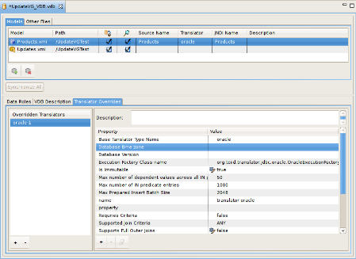
Translator Overrides
The VDB manifest definition (vdb.xml) has had provisions for applying Translator property overrides specific to the source models contained in your VDB. In 7.4, Teiid Designer provides a means to add and edit these overrides. (TEIIDDES-710)
As shown in the figure above, the Translator Overrides tab panel contains a list panel on the left containing references to your Overridden Translators. Selecting one of these from the list populates the Description and Properties panel on the right.
To override translator properties for one or more of you source models, select the "+" or add action at the bottom left of the panel. When the Add Translator Override dialog appears (shown below), select an existing translator type and select OK.
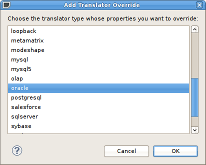
The above dialog will be displayed if there is a default Teiid instance defined and connected in the Teiid View. If there are no Teiid servers defined in your workspace, you can still create a translator override. The following dialog will be displayed instead. Provide a unique name for your translator override and enter a valid translator name (i.e. oracle, mysql, etc. See your Teiid server installation or AS console for available translator names)
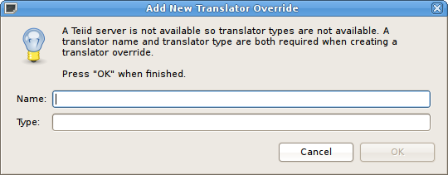
Preferences
We added an additional tab in the Window > Preferences > Teiid Designer > Editor panel. The lone preference allows preventing the confirmation/warning dialog that's presented when you synchronize your VDB. (TEIIDDES-896)
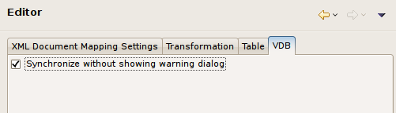
Description View
To improve user experience editing descriptions for models and model objects (TEIIDDES-826) the Description View was changed to a read-only view. To edit Descriptions for selected objects, click the Edit icon in the toolbar or right-click select the "Edit" action in the context menu. (See figures below)
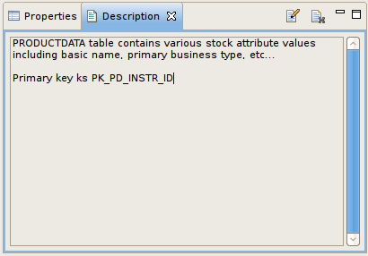
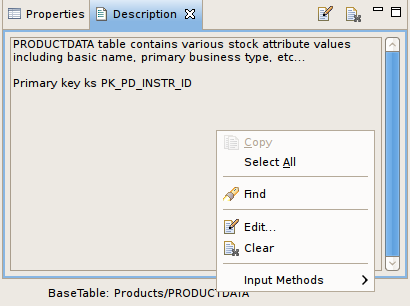
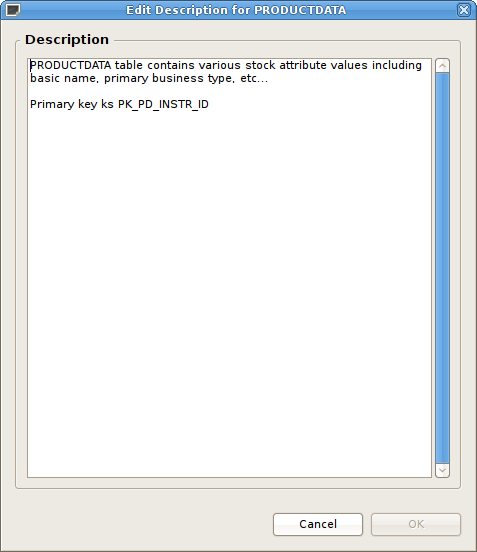
Connection Management
View Connection Information
During JDBC import a model will contain certain connection properties which Teiid Designer uses to provide Preview Data functionality as well as populate VDB's with translator type information.
In 7.4, you can now view this connection information by selecting a source model and using the "Modeling > View Connection Profile Info" action. The read-only dialog is shown below. (TEIIDDES-826, TEIIDDES-876)
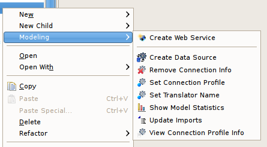

Remove Connection Information
In addition, a Remove Connection Info action was added (see image above) that allows cleaning up/removing Connection Profile properties stored in a model. Some users may want to remove these properties prior to production deployment in your VDB for security reasons.
Lastly, an option was added to the Export > Teiid Designer > Model Project Set wizard which reads "Remove all source connection information from source models". You may want to use this option when export project sets for use by other developers.
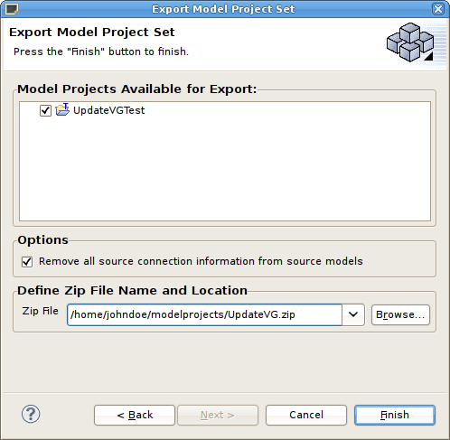
Extended Metadata
Manage Extended Properties
In order to facilitate custom property usage for relational models and objects such as tables, columns, and procedures, a dialog to create extended properties was added (TEIIDDES-945). These properties are exposed in Teiid as indexed metadata and can be read by your custom translator.
In 7.4, you can add, edit and delete these extended properties by selecting a relational model or model object using the "Modeling > Manage Extended Properties" action. The menu option and dialog is shown below.
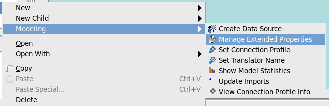
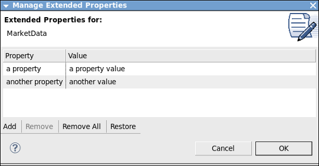
RESTEasy WAR Wizard
RESTful Access to VDBs
A RESTEasy WAR wizard was added to allow RESTful CRUD access to VDBs (TEIIDDES-631). After making your procedures RESTful in Designer, the WAR can be generated using the "Modeling > Generate RESTEasy WAR" action.
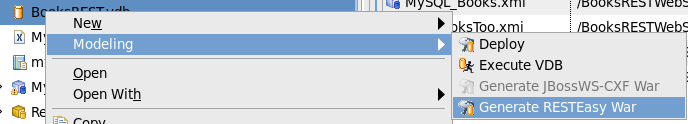
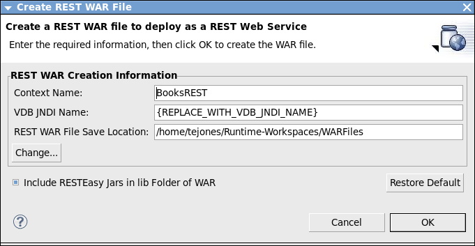